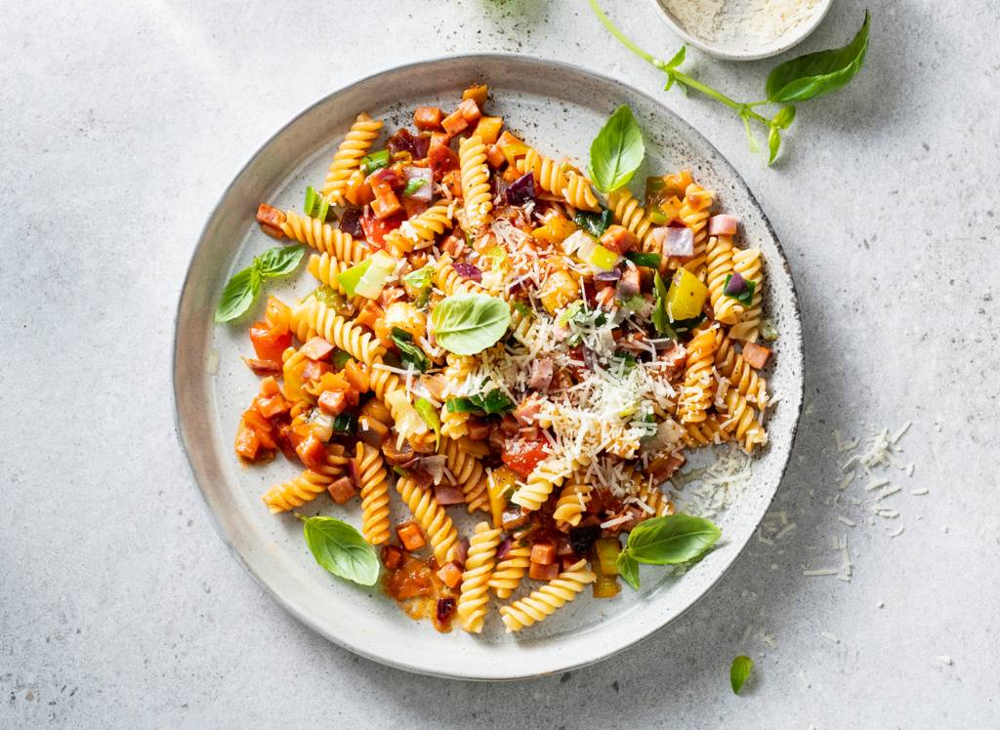

Fusilli met groentesaus en hamblokjes

ingedienten
4 personen
- 300g fusilli
- 1 ei
- 450g macaroni-spaghettigroente
- 250g hamblokjes
- 520g AH BASIC pastasous basilicum
- 50g grana padano 32+
berijding
- Kook de fusilli beetgaar volgens de aanwijzingen op de verpakking. Verhit ondertussen de olijfolie in een hapjespan en bak de groenten 5 min. op middelhoog vuur.
- Voeg de hamblokjes toe en bak 1 min. mee. Schenk de pastasaus bij het groente-hammengsel en warm 2 min. goed door.
- Giet de pasta af en meng door de saus. Rasp er de Grana Padano over en serveer.